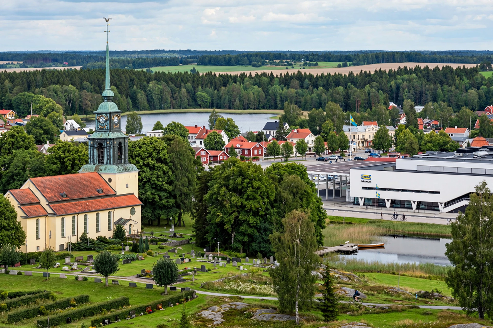

| Älmhult | |
| Country | Sweden |
|---|---|
| Province | Småland |
| County | Kronoberg County |
| Municipality | Älmhult Municipality |
| Population | Roughly 10,000–11,000 (urban area) |
| Known for | Birthplace of IKEA; childhood home of Carl Linnaeus (nearby Råshult) |

Älmhult is a locality in Kronoberg County, Sweden, and the seat of Älmhult Municipality, in the historic province of Småland. Despite its modest size — around ten thousand inhabitants — the town is known worldwide as the birthplace of the furniture retail giant IKEA, which maintains major operations there.
Ingvar Kamprad founded IKEA in 1943, taking the name from his initials and those of the farm Elmtaryd and village Agunnaryd, where he grew up near Älmhult. The first IKEA store opened in Älmhult in 1958. The town remains home to IKEA of Sweden AB, where the company's product range is developed, as well as IKEA's catalogue and communications operations. The original 1958 store building now houses the IKEA Museum, opened in 2016, which chronicles the company's history and Swedish design.
Älmhult grew up as a railway junction on the Southern Main Line (Södra stambanan) between Malmö and Stockholm, with a branch toward Karlshamn; rail connections spurred trade in timber and stone from the surrounding Småland forests and lakes. The town lies near Lake Möckeln, in a landscape of forest, farmland, and red wooden cottages typical of southern Sweden.
The botanist Carl Linnaeus, founder of modern taxonomy, was born in 1707 at Råshult, just north of Älmhult, where a cultural reserve preserves the site of his childhood home. The town's railway station gained wider recognition when IKEA named products after places in the region.